Following on from my earlier article, I want to put into practice the principles that I isolated by looking at GMail, Twitter and Facebook. I’ll apply the principles to one of the most common of web applications: the online store. I want to look at three typical online store pages and then go through some ideas about how best to apply mobile-design principles to the pages.
I want to go through the process of building the site from the group up... from simple sketches through wireframing and the final deisgn.
I’ve used 240×360 as a guide screen size while mocking this up. Because of the massive range of mobile device sizes out there, it can become impractical to support every single screen size out there. 240×360 strikes the perfect balance of practicality and the assurance that your site will look good on the majority of mobile handsets. It’s important to note here that compared to modern desktop screen sizes, this is tiny, around one tenth of the usual available size. The image below illustrates just how much smaller this actually is:
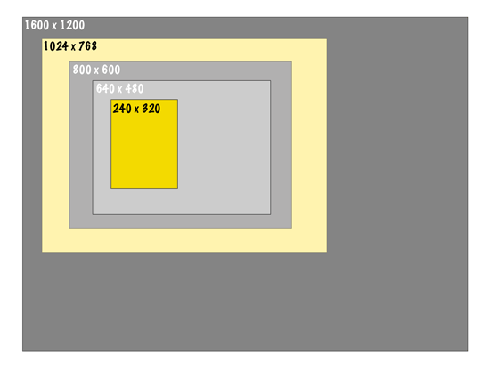
I start with some simple paper-wireframes to sketch out an idea of where things will be. I want to design three pages common to eCommerce stores.
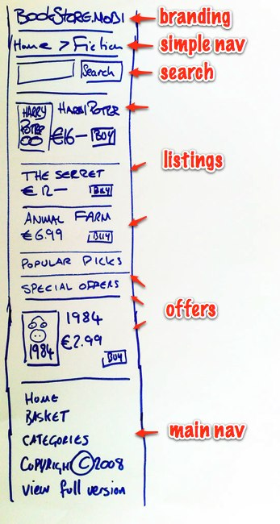
First up is an eCommerce browsing page. The browse page is probably one of the first pages that a visitor to an online store will hit. It’s probably one of the links off the home page, and it will contain a sub-section of editorial content relevent to a theme or category. Just as with desktop sites, it's common and important to include strong branding on a mobile site. It shouldn't take up too much space, but a simple logo at the top of the page works great.
The browse page serves a variety of functions in an eCommerce context. For the navigation, it's important to provide a sense of location, so simple breadcrumbs telling the customer where they are come next. Search comes next and then some listings, some with images, some as links to other sections.
Notice how the main navigation on the site is all the way at the bottom. It's important to display the most important things first on a mobile site, and extra navigation elements should be left to the bottom. Finally, an option to view the full version of the site is always useful as not everyone will necessarily want the mobile version, or there may be features on the full site that don't translate well to mobile.
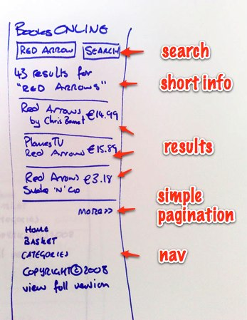
Next I've sketched out a sample search results page. Search is probably the most often-used feature of an online store. This page should be useful and efficient at moving the customer along to where they want to go. Some information at the top of the page to show the customer where they are is all that's necessary before displaying the results of their search. Any pagination is greatly simplified, and extra nav is still down the bottom.
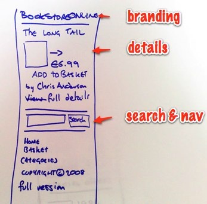
Finally, I've sketched out the item view page. Viewing an item is the point at which the customer reviews an item and adds it to their cart. Again, this page is all about focussing on the most important bits. The title is displayed prominently, closely followed by an image, author price and the crucial ‘add to basket’ option. Notice here how search is moved to the bottom of the page. Search is still relevent and useful, but it's not the most important function any more while we're viewing item details, so we get it out of the way.
These sketches were prepared using the classic tools of web design: pen and paper. For those interested, I used an "edding 1200" marker pen. Some UI designers recommend using a sharpie for wireframes, while others use fineliners. I find something in between is just right!
Now that I have a basic outline of how my three pages are going to look, it's time to refine these into higher fidelity representations of what our final mobile site will looklike.
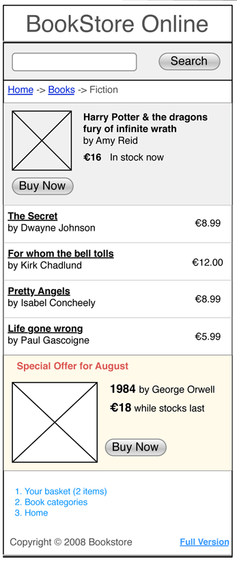
The browse page was pretty much nailed in the sketch. The priority of the elements is spot on and the main wireframe just tightens things up. We decided to swap the simple navigation with the search box. Search is probably the first thing that a customer to an eCommerce site will want to use. Just like how Twitter display their update field before anything else on their mobile site, search comes first here.
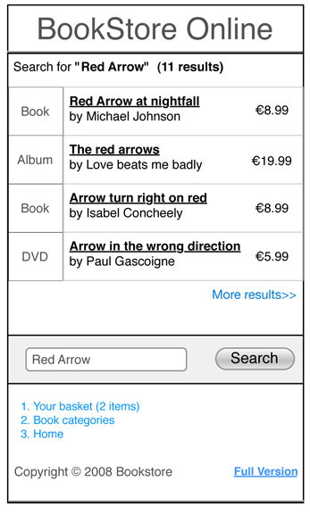
Reflecting on the search page, the single most important thing is the results, so they should be given the highest priority. Any subsidiary elements, such as the search field itself, do just fine below the results. We have kept a one liner that tells the customer what they searched for and how many results there were, although this could be further simplified if desired.
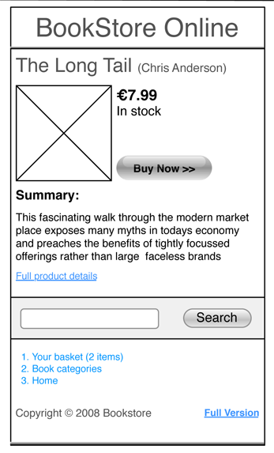
On the view screen, we just tidy up a few elements to get a better sense of how they'll be positioned.
And that's that. Wireframes ready to ship to our designer! We used OmniGraffle to prepare these. Microsoft Visio is good if you're on a PC, or you could skip this step and go straight to...
The beauty of mobile sites is that we don’t need to learn a new technology to implement them. Because the name of the game is simplicity, the markup to produce great looking sites can and should be very simple. In addition, most of the devices on the market today fully support CSS, so making sites that are not only mobile-friendly, but aesthetically pleasing is simpler than ever.
The first thing to sort out when building a site for mobile is the document type. This wikipedia article has a good explanation of the different doctypes and their justifications. I chose version 1.2, making my page header look like:
<?xml version="1.0" encoding="UTF-8"?> <!DOCTYPE html PUBLIC "-//WAPFORUM//DTD XHTML Mobile 1.2//EN" "http://www.openmobilealliance.org/tech/DTD/xhtml-mobile12.dtd"> <html xmlns="http://www.w3.org/1999/xhtml">
I find the HTML Validator plugin for Firefox invaluable while working with HTML. The extension displays a small red X in the status bar of your browser if your page doesn't validate. You may need to check out Ruadhan's tip for getting it to work with the mobile doctype. This post on WAPreview also includes some useful information for working with HTML for mobile.
The process of transferring the wireframes to well-formed, semantic HTML is the same as if it was a regular old desktop-browser based site. One thing to bear in mind is that you don't really have very much horizontal space to play with. Going with a fixed with layout for a mobile device isn't really practical because screen sizes vary so much, so a fluid design is preferable. This means that the order that elements are placed in the HTML can more closely relate to the order they appear on the site, which makes things a lot easier to manage.
In constructing the pages, I used very simple html, highlighting the important elements and using a h1, h2 and h3 heading structure for headings and titles.
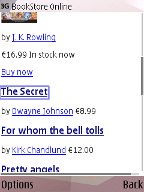
<div id="products"> <h3><a href="view.html">The Secret</a></h3> <span class="author">by <a href="#">Dwayne Johnson</a></span> <span class="price">€8.99</span> <hr/> <h3><a href="view.html">For whom the bell tolls</a></h3> <span class="author">by <a href="#">Kirk Chandlund</a></span> <span class="price">€12.00</span>...
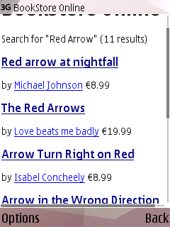
<h1>BookStore Online</h1>
<hr/>
<p id="results-summary">Search for "Red Arrow" (11 results)</p>
<hr/>
<div id="results">
<h3 class="book"><a href="view.html">Red arrow at nightfall</a></h3>
<span class="author">by <a href="#">Michael Johnson</a></span>
<span class="price">€8.99</span>
<hr/>...<div id="main">
<h2>The Long Tail</h2>
<p class="author">by <a href="#">Chris Anderson</a></p>
<div class="image">
<img src="images/long_tail.jpg" width="60" height="85" alt="The Long Tail"></img>
</div>
<div class="purchase">
<p id="price">€16.99 <span id="stock" class="in-stock">In stock</span></p>
<p><a class="buy-now" href="#">Buy now</a></p>
</div>
<div id="details">
<h3>Summary</h3>
<p id="summary">This fascinating walk through the modern market place exposes many myths in today's economy and preaches the benefits of tightly focussed offerings rather than large faceless brands.</p>
</div>
</div>It's worth noting at this stage that the HTML-only version of the site is perfectly passable, and not too unattractive implementation of the three pages. If you're on a budget, or feel like being pragmatic, now's the time to push the site live and start taking orders!
Mobile-based sites can reach the next level with some CSS and javascript. Nokia's N95 for example sports a fully CSS-compliant Webkit based browser. It renders CSS beautifully, but it's a pain to side scroll through sites designed for larger screens. With a lick of CSS with a mobile device in mind, the browser really shines.
If you're not doing any mobile browser detection (using something like dotMobi's DeviceAtlas) then a quick way to add support for a mobile device to your site without changing any html is to use the CSS media="handheld". For example:
<link href="/stylesheets/main.css" media="handheld" rel="stylesheet" type="text/css" />
While not universally supported, it gives you a quick win to ensure that if a device supports your CSS stylesheet, it will display that one.
CSS is best used to provide better visual separation between the elements on the page, and to fit more on the screen. There is some scope for lining things up horizontally on a mobile screen, and where possible it can be used to ensure that the most efficient use is made of screen real estate. Of course, if you have a flair for design, smart use of CSS will give you a chance to make the site visually appealing, in line with your brand. Not to mention a mobile site that will stand out from the crowd.
Here's how the site looks with a gloss of CSS:
By using colours and rules, we can visually separate the different elements on the browse page.
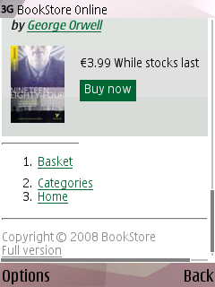
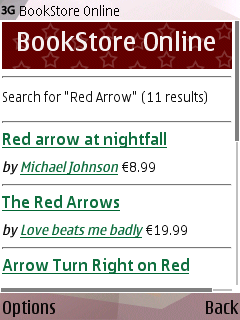
The search screen continues along the same lines of the browse page, providing a consistent look and feel within the site.
The view item screen neatly takes combines the layout from the wireframes with the markup from our previous step.
Check out the full CSS stylesheet here.
One message that I'd like to send home is that it's perfectly fine to use javascript to spruce up a mobile version of a site. You should however pay special attention to gracefully degrade any javascript you include. Using javascript, with or without Ajax, to avoid page refreshes over oft-dodgy EDGE and 3G networks is an effective technique for providing a great user experience on your mobile site.
I normally recommend jQuery as a fast, efficient cross-browser javascript library. The compacted version is 54k, and 15k if you gzip it, which is a bit of a hit for mobile browsers, but the code that you need to write is so compact on top of that. 54k isn't a whole lot to sacrifice in page load time. Google also provide a hosted service for jQuery and other javascript libraries that you can use for super-fast download times. However, use it with caution: there are cases when page load times over 10k will degrade user experience. Your productivity will be higher, but proceed with caution.
For the purposes of our sample app, I'm going to use a simple unobtrusive javascript technique to add support for showing and hiding the full details on our item view page. Here's the javascript:
window.onload = function(){ //load this when the page loads
//set up swap variables
var summary = document.getElementById('summary')
var long_summary = summary.innerHTML + ' <a href="#" onclick="swap_full_summary();return false;">...less</a>'
var short_summary = summary.innerHTML.substr(0,100) + '...' + ' <a href="#" onclick="swap_full_summary();return false;">full details...</a>'
var body = document.getElementById('view-page')
//do the swap
swap_full_summary = function(){
if(summary.innerHTML == long_summary)
{
summary.innerHTML = short_summary
}
else
{
summary.innerHTML = long_summary
}
}
summary.innerHTML = short_summary
}The last step of the puzzle is to run the site through Ready.mobi. This will help give you a sense of how good your site will look on a mobile. I missed a few small things, such as a closing </a> tag and not including a <fieldset> tag in the search form. These things may seem rather pedantic, but ensuring that your page validates against Ready.mobi is a good way to ensure that there are no upsets to users on certain devices and also to test against any caveats that you may have missed. It's a free service, there's no excuse not to use it.
All the HTML, CSS and Javascript for this article was prepared using TextMate, but any good text editor will do!
The sample mockups that accompany this article all get a score of 5 (Good) on Ready.mobi. There are a few warnings, but these I can live with for the sake of my site. I've covered all of the major factors in .mobi compliance. The important thing is to get a balance of functionality with as much compliance as possible. You can check out the compliance for the three pages here. Browse, Search and View
My final message is this: design for mobile devices is not as hard as it might seem at first. Using a few simple techniques, and following a few simple rules, taking a cue from exemplars such as Google, Facebook and Twitter, attractive, useful mobile sites and be put together fast and efficiently. Here are some pointers to take away:
If you want to use any of the code from this article as a starting point, you can view the sample site or check out the source code on Github.